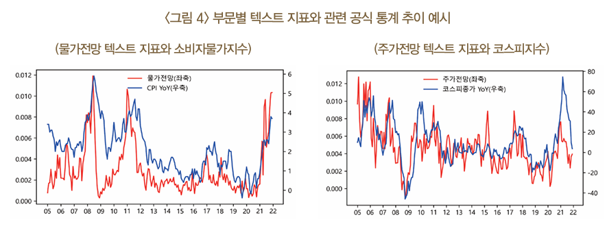
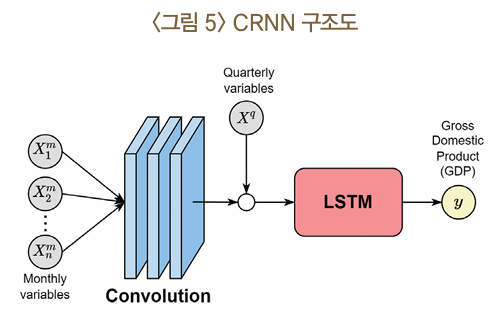
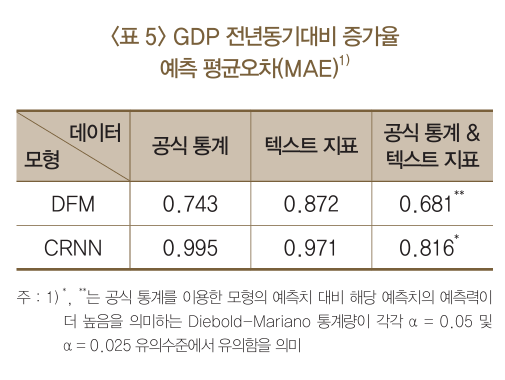
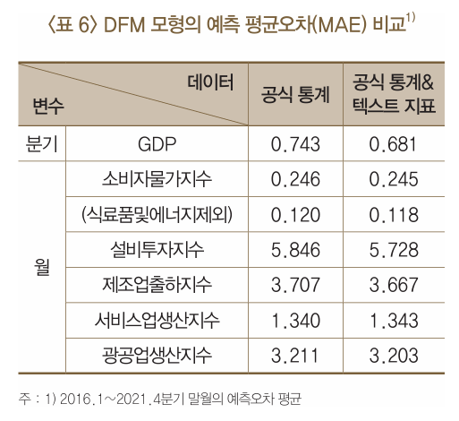
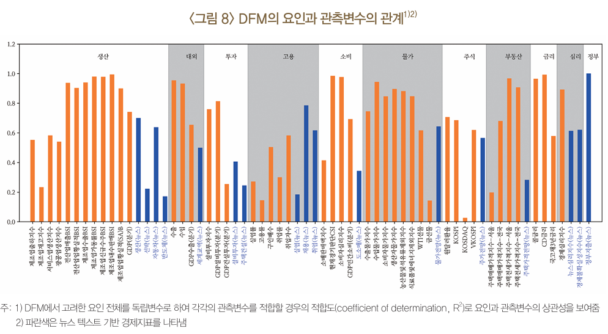

경제부문별 텍스트 지표 (서범석, 2022)
Theme Frequency Indices(TFI) and Text-enhanced Factor Model(TFM)
서범석(2022)에서 소개한 경제부문별 텍스트 지표를 소개한다. 또한 경기 예측 모형에 대한 내용도 포함한다.
논문 요약
선행연구
주제 설정과 추출 방법
주제 설정: 텍스트 지표를 작성하기 위해서는 먼저 추출하고자 하는 주제를 명확히 해야 함. 주제가 너무 광범위하면 정보의 가치가 떨어지고, 너무 좁으면 텍스트에 관련 정보가 부족할 수 있음.
추출 방법
- 통계 모델링 (Stochastic Approach)
- 지도학습 (Supervised Learning): 예시 문장을 통해 학습하여 텍스트에서 주제를 추출, 복잡하고 추상적인 주제에 적합함.
- 비지도학습 (Unsupervised Learning): 예시 문장 없이 텍스트 간의 분포 차이를 이용해 학습함. 예) 주제별 텍스트 클러스터링
- 사람이 정의한 규칙 (Rule-Based Approach): 사람이 직접 텍스트에서 추출하려는 단어나 조건을 정해 놓고, 이를 기반으로 지표를 작성. 주로 문어체 텍스트 분석에 유용, 해석이 직관적임.
- 통계 모델링 (Stochastic Approach)
적합한 방법 선택
- 텍스트 데이터의 성격과 추출하려는 주제에 따라 어떤 방법을 사용할지 결정해야 함. 비정형 텍스트일수록 통계 모델링 방식이 우수한 성능을 보임.
기존 연구 사례
- 샌프란시스코 연준: 뉴스 기사를 긍정적/부정적 기사로 분류하여 뉴스심리지수를 개발.
- Baker et al. (2016): 경제불확실성 지수를 사전접근법 방식으로 작성.
- Bybee et al. (2020): 경제 뉴스 토픽 모델링을 통해 경기 변동을 설명.
- IMF의 Caldara et al. (2022): 지정학적 리스크 평가를 위한 사전접근법 방식의 리스크 지표 작성.
- 한국은행: 지도학습 방식으로 뉴스심리지수를 개발하여 실험적 통계로 공개.
데이터
- 뉴스기사 텍스트 데이터의 웹크롤링(web crawling)
- 경제분야 뉴스 기사 약 70여개 언론사에서 수집
- 수집 대상기간: 2005년 ~ 2022년 3월
- 평일 기준 일평균 약 3000건, 문장 단위로 환산 시 약 1천8백만 문장
경제지표 작성
15개 부문의 주요 거시변수 및 일부 산업 관련 미시변수를 선정
사전접근법 방식 사용
- 부문별 텍스트 기반 경제지표는 주제가 명확하고, 뉴스 데이터가 정형화된 문어체이므로 사전접근법 방식을 사용하는 것이 적합함
- 지도학습 방식은 시간과 비용, 과적합 문제 등으로 부적합함:
- 토픽모델링과 같은 비지도학습 방식은 추출 주제가 명확하지 않을 때 적합하지만, 구체적인 주제를 다룰 경우 적합하지 않음
특정 단어의 포함 여부를 문장 단위에 적용한 뒤, 해당 문장의 포함 여부를 기준으로 뉴스 기사를 분류하여 작성 (기존 연구들은 기사 단위에 적용)
분야별 단어군을 사전에 정의하고, 이들 단어군을 포함하는 문장이 등장한 기사들의 기간중 상대빈도수를 계산하여 작성
<부문별 텍스트 지표 작성을 위한 단어군>
| 부문 | 작성 방법 |
|---|---|
| 생산 | (생산)&(상승, 급등, 증가, 개선, 가속, 늘) - (생산)&(하락, 급감, 감소, 약화, 둔화, 줄) |
| 산업 | (선박)&(수주)&(상승, 급등, 증가, 개선, 늘) - (선박)&(수주)&(하락, 급감, 감소, 약화, 줄) |
| 자동차 | (자동차, 승용차)&(상승, 급등, 증가, 개선, 가속) - (자동차, 승용차)&(하락, 급감, 감소, 약화, 둔화) |
| 반도체 | (반도체)&(상승, 급등, 증가, 개선, 가속) - (반도체)&(하락, 급감, 감소, 약화, 둔화) |
| 설비투자 | (설비투자, R&D)&(상승, 급등, 증가, 개선, 가속, 늘, 확대) - (설비투자, R&D)&(하락, 급락, 감소, 약화, 둔화, 줄, 감소) |
| 주택건설 | (주택, 아파트)&(건설, 건축, 착공, 시공) |
| 실업 | (실업)&(상승, 증가, 늘, 악화) |
| 고용 | (채용, 고용)&(상승, 증가, 개선, 늘) - (채용, 고용)&(하락, 감소, 약화, 줄) |
| 취업 | (취업, 구직)&(상승, 증가, 늘) - (취업, 구직)&(하락, 감소, 줄) |
| 도소매 | (도매, 소매, 도소매)&(상승, 급등, 증가, 개선, 가속, 늘) - (도매, 소매, 도소매)&(하락, 급감, 감소, 약화, 둔화, 줄) |
| 정부지출 | (정부)&(지원, 보조, 지출) |
| 물가전망 | (물가)&(전망, 예측, 예상)&(상승, 급등, 올라, 높) - (물가)&(전망, 예측, 예상)&(하락, 급락, 내려, 낮) |
| 주가전망 | (코스피, 코스닥, 주가, 주식)&(전망, 예측)&(상승, 증가, 개선, 늘, 높) - (코스피, 코스닥, 주가, 주식)&(전망, 예측)&(하락, 감소, 약화, 줄, 낮) |
| 주택가격 | (주택, 아파트)&(가격, 매매가, 전세가, 분양가)&(전망, 예측)&(상승, 급등, 확대, 개선, 가속, 높) - (주택, 아파트)&(가격, 매매가, 전세가, 분양가)&(하락, 감소, 낮) |
| 세계교역 | (세계, 글로벌)&(교역, 무역, 수출, 수입)&(상승, 급등, 증가, 개선, 가속, 늘, 확대) - (세계, 글로벌)&(교역, 무역, 수출, 수입)&(하락, 급감, 의미.소, 약화, 둔화, 줄) |
주석:
(a, b, …)는 하나의 문장 안에서 나열된 원소(a, b, …) 중 하나 이상의 원소가 포함되는 경우를 의미.
a & b … 는 하나의 문장 안에서 나열된 원소(a, b, …) 모두가 포함되는 경우를 의미.
‘|’는 AND 조건을 만족하는 문장을 포함하는 것이며, 기여 지수를 의미.
수식 설명
\(t\) 시점에 발간된 뉴스 기사 집합: \(\Omega_t = \{ A_1, A_2, \dots, A_N \},\)
- \(N\)은 \(t\)시점에 발간된 뉴스 기사 개수
각 뉴스 기사 \(A_i\)는 문장 \(S_{im}\)의 집합 표현:
\[A_i = \{ S_{i1}, S_{i2}, \dots, S_{iM_i} \},\]
- 여기서:
- \(M_i\)는 기사 \(A_i\)에 포함된 문장의 총 개수
- \(S_{im}\)는 $A_i $에 포함된 \(m\)-번째 문장
- \(t\)시점의 텍스트 기반 지표 \(R_t\)는 특정 분야 단어군 \(W^{(k)} = \{W^{(k)}_1\}, \cdots, \{W^{(k)}_{Lk}\}\)와 그 단어군 \(k\)에 속하는 단어 \(w^{(k)}_j(j=1,\cdots,l_k)\)에 대하여 다음과 같이 나타냄
\[R_t = \frac{\sum_{i=1}^{N} \hat{A}_i}{N},\]
\[\hat{A}_i = \bigvee_{m=1}^{M_i} C_{im},\]
\[C_{im} = \prod_{k=1}^{K} \bigvee_{l=1}^{L_k} I_{S_{im}}\left(w_l^{(k)}\right).\]
여기서 \(I_{S}(w)\)는 지시 함수(indicator function):
\(I_{S}(w) = \begin{cases} 1, & \text{if } w \in S \\ 0, & \text{otherwise.} \end{cases}\)
\(\bigvee_{m=1}^{M} C_m = \max(C_1, \cdots, C_M)\) 는 최대값 함수
긍정 단어군을 기준으로 추출한 긍정 지표에서 부정 단어군을 기준으로 추출한 부정 지표를 차감하여 작성
\[R_t = R_t^{pos} - R_t^{neg}\]
유용성 검토 결과
텍스트 지표가 각 부문의 관련 공식 통계와 0 ~ 9개월 선행시점에서 0.35~0.73의 비교적 높은 상관관계를 보임
또한 Granger 인과성 검정 결과를 통해서도 텍스트 지표가 1~7개월 선행시점에서 대부분 유의한 인과성을 보이는 것으로 나타남

경기 예측모형
텍스트 지표는 공식 통계에 비해 노이즈가 크며, 이를 정상 시계열로 변환하기 어렵다. 비정상성(non-stationarity)이 명백하지 않으나, 변동성이 크고 경제적 시그널과 노이즈를 구분하기 어려운 문제가 있음.
선형모형과 비선형모형의 한계
- 선형모형: 정상성 가정이 완벽히 충족되지 않아 예측오차가 증가할 가능성이 있음.
- 비선형모형: 노이즈를 과적합하여 과적합(overfitting) 문제가 발생할 가능성이 있음.
본 연구의 접근 방법
- 선형모형: 경기 예측에서 널리 활용되는 동적인자모형 (Dynamic Factor Model, DFM)을 사용
- 비선형모형: Convolutional Recurrent Neural Network (CRNN)을 사용하여 경제 시계열 데이터에 맞게 구성
비선형모형
비선형모형(CRNN)의 구성
- CRNN 구조:
- Convolutional Layer: 64개의 필터를 3개월 단위로 적용
- LSTM Layer: 32개 유닛으로 구성된 Long Short-Term Memory (LSTM) 레이어를 사용
- 작동 방식:
- Convolutional Layer는 관측변수 간 관계를 추정
- LSTM Layer는 이 관계의 시계열 추세를 모형에 반영
- 자료 처리:
- 월 및 분기 단위의 시계열 자료를 분기 단위로 집계하여 혼합주기 시계열 데이터를 CRNN 모형이 처리할 수 있도록 설계

선형 모형
- Nowcasting에 널리 활용되는 동적인자모형(Dynamic Factor Model, DFM) 사용
- 다변량 관측변수들을 소수의 잠재요인(latent factor)으로 추정하여, 고차원 시계열 변수들의 동조적 변동성을 효과적으로 적합
- 복잡한 다변량 시계열 데이터를 간결하게 요약할 수 있음. 경제적 변동성을 설명하는 데 적합하며, Nowcasting 및 경기 예측 모형에서 효과적으로 활용됨
DFM의 구성
- 관측변수에 대한 선형모형: 각 관측변수는 잠재요인과의 선형 관계를 통해 설명됨
- 잠재요인에 대한 선형모형: 잠재요인은 시계열적으로 상호 관련되어 있으며, 그 변화를 선형적으로 설명함
\[X_t' = \lambda(L)f_t + e_t\] \[f_t = \psi(L)f_{t-1} + \eta_t\]
\(X_t'\): \(t\)시점의 \(p\)개 관측변수
\(f_t\): \(q\)개 잠재요인
\(e_t\) 및 \(\eta_t\): \(t\)시점의 idiosyncratic disturbance 및 factor innovation
\(L\): 시차연산자
\(\lambda(L)\) 및 \(\psi(L)\): 각각 두 식의 시차 다항행렬식
잠재요인 13개
- 모든 변수 고려한 종합요인 2개
- 63개 관측변수를 부문별로 나누어 구성한 부문별요인 11개
시차변수
- 종합요인은 4기
- 부문별요인은 1기
| 요인 | 관측변수 |
|---|---|
| 종합1 | 모든 변수 |
| 종합2 | 모든 변수 |
| 생산 | 제조업출하지수, 제조업재고지수, 서비스업생산지수, 광공업생산지수, 전산업매출BSI, 전산업황실적BSI, 제조업수출BSI, 제조업경기동률BSI, 제조업신규수주BSI, 제조업내수판매BSI, 제조업업황실적(SA)BSI, GDP(분기), 생산(뉴스), 선박(뉴스), 자동차(뉴스), 반도체(뉴스) |
| 대외 | 수출, 수입, GDP수출(분기), 세계교역(뉴스) |
| 투자 | 설비투자지수, GDP설비투자(분기), GDP건설투자(분기), 설비투자(뉴스), 주택건설(뉴스) |
| 고용 | 실업률, 고용률, 구인배수, 취업률, 취업자수, 실업(뉴스), 채용(뉴스), 취업(뉴스) |
| 소비 | 소매판매액지수, 현재경제판단CSI, 소비자심리지수, GDP민간소비(분기), 도소매(뉴스) |
| 물가 | 수출물가지수, 수입물가지수, 소비자물가지수, 생산자물가지수, 농산물및석유류제외지수, 식료품및에너지제외지수, WTI선물, 금선물, 물가전망(뉴스) |
| 주식 | 원달러환율, KOSPI, KOSDAQ, VKOSPI, 주가전망(뉴스) |
| 부동산 | 주택매매가격지수–서울, 주택매매가격지수–전국, 주택전세가격지수–서울, 주택전세가격지수–전국, 주택가격전망(뉴스) |
| 금리 | 콜금리, CD금리, 국고채3년금리 |
| 심리 | 경제심리지수, 뉴스심리지수(뉴스), 경제불확실성지수(뉴스) |
| 정부 | 정부지출(뉴스) |
주: 1) 모든 관측변수는 추세적으로 상승하는 경우 전년동기대비 증가율을 사용하였으며, 진한 글씨는 텍스트 지표를 의미
학습 데이터 구성
학습 데이터 구성
- 과거 시점 기준으로 작성된 데이터를 vintage 데이터라고 부르며, 이는 서로 다른 공표 주기와 시차를 가진 자료로 구성됨.
Vintage 데이터 문제점
- 혼합주기문제 (Mixed Frequency Problem): 공표 주기가 다른 자료를 하나의 데이터로 구성할 때 발생.
- 최종시점차이문제 (Ragged Edge Problem): 최종 시점의 자료가 누락되어 발생.
문제 해결 방법
일반적으로 보간법 (Interpolation) 또는 집계법 (Aggregation)을 사용
- 보간법: 고차원 주기의 변수를 저차원 주기로 변환.
- 집계법: 데이터의 시차를 일치시키기 위해 저차원 주기로 집계.
DFM: 보간법을 활용.
CRNN: 집계법을 활용.
예측 수행시점은 분기 종료 당일로 하고, 예측 대상시점은 당분기로 한정
모형 학습
- 2005년부터 2021년까지의 46개 공식 통계자료(월 41개, 분기 5개)와 17개 뉴스 텍스트 기반 경제지표를 vintage 데이터로 구성
모형 평가
- 2016년 1분기부터 2021년 4분기까지의 전년동기대비 국내총생산(GDP) 증가율의 일반화(regularized) 예측평균오차(mean absolute error, MAE)를 평가지표로 이용
- 즉, 매분기 말일까지 이용가능한 자료를 바탕으로 당분기 GDP 증가율을 예측하고, 이를 실제 공표수치와 비교하여 모형을 평가
- 텍스트 데이터를 추가함으로써 얻는 정확도 개선효과와 모형 선택에 따른 정확도 개선효과를 구분하기 위하여, 예측평균오차를 데이터×모형의 크로스테이블로 작성
예측모형의 추정 결과
- 선형 및 비선형 모형 모두에서 텍스트 지표를 추가한 경우 예측 정확도가 유의미하게 높아짐
- 경기 예측모형으로는 DFM이 CRNN보다 우수한 것으로 나타남
- 다만 DFM 모형을 보면 텍스트 지표만을 이용한 경우의 예측 정확도는 공식 통계만 이용한 경우보다 낮게 나타남


DFM 모형 해석
- DFM에 포함된 텍스트 지표의 예측 기여도
- 생산(뉴스), 물가전망(뉴스), 채용(뉴스), 정부지출(뉴스), 뉴스심리지수 (뉴스), 경제불확실성지수(뉴스) 등 거시적 지표의 성격을 갖는 텍스트 지표가 선박(뉴스), 반도체(뉴스) 등 미시적 지표 성격의 텍스트 지표에 비해 경기 예측모형에 유용한 것으로 나타남

Disclaimer!: 논문 저자인 서범석 박사님이 2024년 개정하여 영어 논문을 게제하였다. 데이터 범위와 모형 추정 결과가 다르니 참고하길 바란다.
참고문헌
- 서범석 (2022). BOK 이슈노트[제2022-18호] 뉴스 텍스트를 이용한 경기 예측: 경제 부문별 텍스트 지표의 작성과 활용
- Seo, B. (2024). Econometric forecasting using ubiquitous news text: Text-enhanced factor model. International Journal of Forecasting.